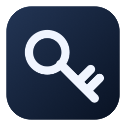

AD Password Day 지원
AD Password Day는 macOS 메뉴 막대에서 회사 AD 비밀번호의 만료일을 확인하고 비밀번호를 변경하는 앱입니다. 문의: s10cho.deon@gmail.com
처음 설정하기
- macOS 14 이상인지 확인합니다. 앱은 Apple Silicon과 Intel Mac을 대상으로 합니다.
- 회사 IT 담당자에게 AD 서버 호스트 이름, Kerberos realm, 계정 이름과 LDAP 검색 기준을 받습니다. 회사 밖에서는 VPN이 필요할 수 있습니다.
- 메뉴 막대의 AD Password Day를 열고 ‘계정 설정’ 또는 ‘설정…’으로 이동합니다. ‘연결 설정’에 받은 값을 입력하고 저장합니다. 신규 설치에는 특정 회사의 연결값을 넣지 않습니다.
- ‘만료일 조회’를 누르고 현재 회사 비밀번호로 인증합니다. 최초 조회 전에는 만료일을 알 수 없습니다.
- ‘비밀번호 변경’에서 현재 비밀번호, 새 비밀번호, 새 비밀번호 확인을 입력합니다. 회사의 비밀번호 정책이 적용됩니다. 변경이 확인되면 새 비밀번호로 만료일을 한 번 조회합니다.
어떤 회사 환경을 지원하나요?
- 디렉터리: 온프레미스 Active Directory Domain Services
- 서버: 회사에서 지정한 한 대의 도메인 컨트롤러. 같은 호스트에 Kerberos·비밀번호 변경·LDAP 연결을 사용합니다.
- 계정: sAMAccountName 또는
계정@같은-realm. 다른 UPN 접미사나 sAMAccountName과 다른 UPN 사용자 부분은 지원하지 않습니다. - LDAP 검색 기준:
DC=example,DC=invalid처럼 DC 항목만 사용하는 형식. OU 항목을 포함한 검색 기준은 지원하지 않습니다. 예시는 실제 서버가 아닙니다. - 인증·조회 보호: Kerberos 비밀번호 인증과 GSSAPI/SASL 암호화 LDAP. 조회 연결은 AES 128 또는 AES 256 보호가 필요합니다.
- 기본 포트: Kerberos 인증 88, 비밀번호 변경 464, LDAP 389. 설정한 TCP 포트에 접근할 수 있어야 합니다. 회사 환경에 맞게 바꿀 수 있습니다.
- 언어: 현재 앱 화면은 한국어입니다.
서버 호스트 이름은 회사 IT 담당자가 알려 준 실제 DC 이름을 사용하세요. 앱이 IP 주소나 별칭을 Kerberos 서비스 이름으로 자동 보정하지 않습니다. DC 자동 검색과 장애 시 다른 서버로 자동 전환하는 기능도 없습니다. 회사의 계정 정책과 네트워크 구성에 따라 사용 가능 여부가 달라집니다.
Entra ID 전용 계정, 웹사이트 로그인, 브라우저 SSO, MFA 연동, 웹 비밀번호 자동 완성은 지원하지 않습니다. 현재 비밀번호를 잊은 경우에는 회사의 계정 복구 절차를 이용하세요.
조회할 때마다 비밀번호를 입력해야 하나요?
기본 설정에서는 비밀번호를 저장하지 않습니다. 반복 입력을 줄이려면 ‘설정…’ → ‘추가 설정’에서 ‘키체인 저장 · 자동 조회’를 켜고 저장한 뒤, 현재 비밀번호로 한 번 조회하세요. 인증에 성공하면 해당 계정·연결 설정의 비밀번호를 이 Mac의 키체인에 저장하고 수동·주기 조회에 사용합니다. iCloud로 동기화하지 않습니다.
키체인이 잠겼거나 저장된 비밀번호가 유효하지 않으면 다시 입력해야 할 수 있습니다. 인증 결과가 불확실한 경우에도 자동 재시도를 중단하고 직접 확인하도록 안내합니다. 계정·서버를 바꾸면 기존 범위의 비밀번호를 새 연결에 재사용하지 않습니다.
비밀번호는 바뀌었는데 새 만료일이 보이지 않아요.
비밀번호 변경과 만료일 조회는 별도 작업입니다. 변경이 성공한 뒤 LDAP 조회가 실패할 수 있습니다. 화면이 ‘변경 완료 · 만료일 조회 실패’라고 알리면 비밀번호를 다시 바꾸지 말고, 네트워크·VPN을 확인한 뒤 ‘새 비밀번호로 조회’를 사용하세요. 창을 닫은 뒤 다시 조회한다면 새 비밀번호를 입력하세요. 변경 결과 자체를 확인하지 못했다는 안내라면 무작정 반복하지 말고 회사의 공식 로그인 수단이나 IT 담당자를 통해 현재 비밀번호를 먼저 확인하세요.
‘연결 확인’은 성공했는데 조회가 실패해요.
연결 확인은 설정한 TCP 포트에 도달하는지 확인하는 단계입니다. 계정 인증이나 LDAP 검색 성공을 보장하지 않습니다. 계정 이름, realm, DC 호스트 이름, 검색 기준, 시간 동기화와 서버 정책을 IT 담당자에게 확인하세요. 코드가 표시되면 비밀번호 없이 해당 코드를 지원 메일에 포함할 수 있습니다.
만료일 ‘미확인’ 또는 ‘추정’은 무슨 뜻인가요?
‘미확인’은 서버에서 만료일을 확인하지 못한 상태입니다. 회사 정책에 따라 만료되지 않거나 변경이 필요한 계정 상태도 구분해 표시합니다. ‘수동으로 만료일 추정’을 켜면 입력한 마지막 변경일과 주기로 계산할 수 있지만, 이 날짜는 AD에서 확인한 값이 아닙니다. 마지막 조회 시점과 결과를 함께 확인하세요.
회사 계정 없이 살펴볼 수 있나요?
체험 모드에서 합성 계정으로 조회, 비밀번호 변경, 잘못된 비밀번호 오류와 저장 후 조회 흐름을 살펴볼 수 있습니다. 실제 AD나 시스템 키체인을 사용하지 않는 시뮬레이션이며, 회사 설정과 실제 저장된 비밀번호에 영향을 주지 않습니다. 체험에는 실제 비밀번호를 입력하지 마세요. 체험 성공이 회사 환경의 연결·암호화·키체인 동작을 검증한 것은 아닙니다.
저장한 비밀번호를 지우려면 어떻게 하나요?
‘설정…’ → ‘추가 설정’에서 ‘키체인 저장 · 자동 조회’를 끄고 저장합니다. 해당 계정·연결 범위의 비밀번호를 삭제합니다. 키체인이 잠겨 있으면 자동 인증을 중단하고 삭제를 대기시킵니다. Mac의 잠금을 해제한 상태에서 앱을 실행해 삭제가 완료되도록 해 주세요. 설정 변경 뒤에도 관련 안내가 계속 보이면 지원 주소로 문의하세요.
앱 제거만으로 키체인 항목이 삭제된다고 보장할 수 없습니다. 앱을 제거하기 전에 위 절차를 진행하세요. 저장을 끄는 동작은 로컬 설정·조회 기록 전체 삭제와 다릅니다. 남은 앱 데이터의 제거는 지원 주소로 문의할 수 있습니다. 회사 AD 계정이나 서버 기록은 앱이 삭제하지 않습니다.
문의할 때 무엇을 보내면 되나요?
- 앱 버전과 빌드 번호, macOS 버전
- 수행한 작업과 화면에 표시된 오류 코드
- 재현 순서와 회사 네트워크·VPN 연결 여부
비밀번호, 일회용 인증 코드, Kerberos 티켓, 개인 키는 보내지 마세요. 화면을 첨부한다면 계정·서버 주소 등 회사의 민감한 정보를 가려 주세요. 회사 계정 잠금, 비밀번호 정책, VPN 권한은 회사 IT 담당자가 확인해야 합니다.
개인정보 처리방침에서 로컬 저장과 지원 메일 처리 방식을 확인할 수 있습니다.
Setup and support
The app interface is currently in Korean.
Connect an existing company account
- Use macOS 14 or later. The app targets Apple Silicon and Intel Macs.
- Ask your IT team for the DC host name, Kerberos realm, account name and LDAP search base. Connect to the company network or VPN when required.
- Open 계정 설정 (Account settings) or 설정… (Settings), expand 연결 설정 (Connection settings), enter the values and save.
- Choose 만료일 조회 (Check expiry) and enter the current password. Choose 비밀번호 변경 (Change password) to enter the current password, a new password and confirmation. The company password policy applies.
Compatibility
The app connects to one configured on-premises Active Directory Domain Services DC using Kerberos and encrypted LDAP GSSAPI with AES 128 or AES 256. Default TCP ports are 88 for authentication, 464 for password changes and 389 for LDAP. Ports are configurable. A port check proves reachability only, not authentication or successful LDAP search.
Use a sAMAccountName or the same name with the configured realm suffix. The LDAP search base accepts DC components only, not OU components. Alternate UPN suffixes, UPN user parts different from sAMAccountName, DC discovery/failover and automatic IP/alias-to-SPN canonicalization are not supported. Use the actual DC host name your IT team provides.
Entra-only accounts, browser SSO, MFA and website password autofill are not supported. If you do not know the current password, use your company's account recovery procedure.
Password storage and deletion
Storage is off by default. To reduce repeated entry, open 추가 설정 (Additional settings). Enable 키체인 저장 · 자동 조회 (Keychain storage and automatic checks), save, and complete one successful query. The password is stored for that account/connection only in this Mac's Keychain without iCloud synchronization.
Turn the setting off and save to stop automatic authentication and delete the scoped password. If Keychain is unavailable, deletion is queued. Run the app while the Mac is unlocked so deletion can complete. Uninstalling alone does not guarantee Keychain deletion. This setting does not erase all local preferences or company AD records.
A change succeeded but expiry could not be read
Password change and LDAP expiry lookup are separate operations. If the screen reports a confirmed change followed by an expiry-query failure, check your network or VPN and choose 새 비밀번호로 조회 (Check with new password). Do not change the password again just to retry the query. If the change result itself is uncertain, verify the current password through your company's official login process or IT team before retrying.
Try without company credentials
Choose 설정 없이 체험하기 (Try without setup), or 체험 모드 열기 (Open demo mode) if configured. 샘플 입력 (Fill sample values) fills public demo values. Use 체험 초기화 (Reset demo) to start over and 체험 끝내기 (End demo) to leave.
The demo is a memory-only simulation. It uses no real AD server or system Keychain and does not alter the normal account/settings. It does not validate a real company's authentication, encryption or Keychain environment. Do not enter real passwords.
Contact
Email s10cho.deon@gmail.com with the app version/build, macOS version, error code, reproduction steps, and whether the company network or VPN was connected.
Do not send passwords, one-time codes, Kerberos tickets or private keys. Redact account/server details and sensitive company information from screenshots. Your IT team handles company account lockouts, password policies and VPN permissions. See the privacy policy for information about support email and local storage.